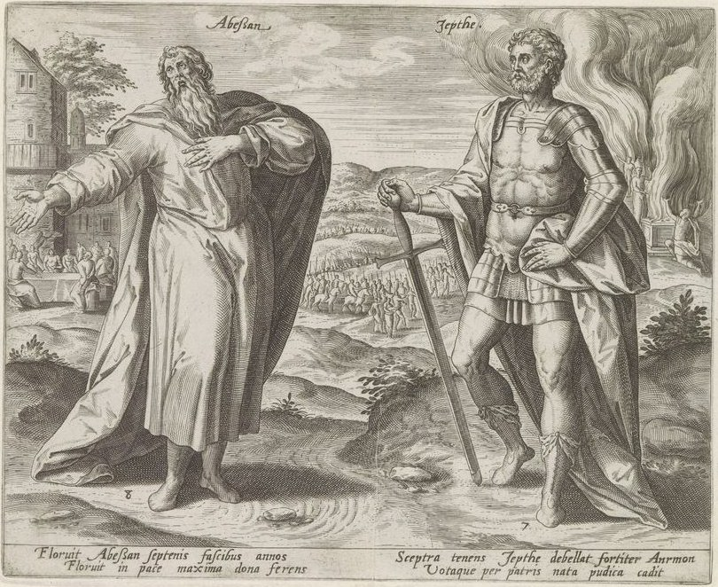

Jueces 12 — La Traducción Mister

Dos jueces de una serie de Amberes de los doce jueces de Israel, numerados 8 y 7 en la plancha. «Abessan» es la grafía de Ibzán en la Biblia latina (la «Abesan» de la Douay): señala un banquete de bodas delante de su casa, las treinta hijas enviadas fuera y las treinta traídas de fuera del versículo 9, y el latín bajo él dice «Abessan floreció siete años con las varas del mando; floreció en paz, llevando los mayores dones». Jefté, con armadura, se apoya en su espada; detrás de él la procesión y el fuego del altar pertenecen a Jueces 11, y sus versos dicen «Con el cetro en la mano, Jefté vence con valor a Amón, y por los votos de su padre cae la hija casta». El grabador da a Ibzán paz y dones; el capítulo solo le da hijos, años y una tumba.

Notas del traductor — versículo por versículo
¿Zafón, o «hacia el norte»? Tsafonah es la palabra «norte» con la terminación que significa «hacia», y es también una ciudad: Zafón está en la parte de Gad del valle del Jordán en Josué 13:27 (ya en estas páginas). Efraín vive al oeste del Jordán y Jefté al este, de modo que los hombres tienen que cruzar el río para llegar a él; una ciudad del valle encaja con el cruce, y una marcha hacia el norte no lo explica. Esta traducción lee la ciudad. El estante se parte por la mitad: la RV 1909 «pasaron hacia el aquilón», la RV60 «pasaron hacia el norte», la TNM 1987 «cruzaron hacia el norte»; frente a ellas la NVI «cruzaron el río hacia Zafón» y la TNM 2019 «pasaron en dirección a Zafón». La traducción griega, que para Jueces sobrevive en dos formas, se parte igual: el texto B tiene eis borran, «hacia el norte», y el texto A eis Sephina, un lugar.
«Fueron convocados» y «yo clamé a ustedes». El verbo del versículo 1, vayitsa’eq, es el que llamó a Efraín a la persecución de Gedeón: «se reunieron todos los hombres de Efraín» (Jueces 7:24, ya en estas páginas). Jefté responde con su gemelo, za’aq: «yo clamé a ustedes, y no me salvaron de su mano». Es la palabra del libro para el clamor de Israel a Jehová, y la respuesta de Jehová en Jueces 10:12 (ya en estas páginas) fue «yo los salvé de su mano». A Efraín se le clamó como se clama a Dios, y no vino. La queja misma es vieja: Efraín le dijo a Gedeón que los había tratado mal, «sin llamarnos cuando fuiste a pelear» (Jueces 8:1, ya en estas páginas). Gedeón los calmó. Jefté discute.
Una contienda, un libertador y una vida en la palma. Ish riv hayiti es literalmente «hombre de contienda era yo»: riv es una disputa llevada como un pleito, la raíz de la propia pregunta de Jefté a Amón, «¿Contendió él alguna vez con Israel, o peleó contra ellos?» (Jueces 11:25, ya en estas páginas). «Tú no eras libertador» va en singular en el hebreo, eynkha moshia, y moshia es el título que el libro dio a Otniel (Jueces 3:9, ya en estas páginas). «Puse mi vida en mi palma» mantiene kaf, la palma abierta, aparte de yad, la mano en la que Jehová entrega a Amón en el mismo versículo. La RV 1909 dice «puse mi alma en mi palma», la TNM 1987 «poner mi alma en la palma de mi propia mano», y la RV60 «arriesgué mi vida». Jonatán dirá lo mismo de David ante Goliat (1 Samuel 19:5).
«Tu casa la quemaremos sobre ti con fuego». El hebreo pone «tu casa» primero, lo amenazado antes de la amenaza. La NVI dice «prenderemos fuego a tu casa, contigo adentro», y la RV60 «quemaremos tu casa contigo». Las mismas palabras, «quemaremos … con fuego», vuelven una vez más en este libro, cuando los filisteos amenazan a la mujer de Sansón y a la casa de su padre (Jueces 14:15, ya en estas páginas).
«Fugitivos de Efraín», dos veces. La burla del versículo 4 es hebreo difícil: «Fugitivos de Efraín son ustedes, Galaad, en medio de Efraín, en medio de Manasés». Parece despreciar a los galaaditas como desertores de las tribus del oeste del río. El estante la suaviza en direcciones distintas: la NVI «renegados de Efraín y Manasés», la TNM 2019 «una pandilla de fugitivos de Efraín», la RV60 «Vosotros sois fugitivos de Efraín». La frase pelitei Efrayim, «fugitivos de Efraín», está en dos versículos de la Biblia hebrea: la burla del versículo 4, y el versículo 5, donde los fugitivos de Efraín son los propios hombres de Efraín que corren hacia el río. El insulto se vuelve contra quienes lo dijeron, y la traducción mantiene las mismas palabras en los dos versículos para que pueda hacerlo.
Los vados del Jordán. Galaad toma los pasos «frente a Efraín», como Aod lo hizo frente a Moab: la frase «los vados del Jordán» está en tres versículos de la Biblia hebrea, Jueces 3:28 (ya en estas páginas) y los versículos 5 y 6 de aquí. Ma’barot, «vados», viene de avar, «pasar, cruzar», y la raíz recorre el capítulo: Efraín pasó (v. 1), Jefté pasó (vv. 1 y 3), y el hombre del río dice «Déjenme pasar» (v. 5). La TNM 2019 los llama «los lugares de paso del Jordán».
«¿Eres efrateo?» La palabra es ha-Efrati, y el hebreo la usa para dos pueblos. Está en cinco versículos de la Biblia hebrea: aquí; para Elcaná, de la región montañosa de Efraín (1 Samuel 1:1, ya en estas páginas, «efrateo»); para Jeroboam de Zereda (1 Reyes 11:26); y para gente de Belén de Judá, la casa de Elimélec (Rut 1:2, ya en estas páginas, «efrateos») y Isaí (1 Samuel 17:12). El texto griego B pregunta mē Ephrathitēs ei, «¿Eres efrateo?». El hombre del vado dice que no, y los galaaditas no le creen.
Shibolet. Shibbolet tiene dos sentidos, espiga y corriente, y la palabra está en cinco versículos de la Biblia hebrea: aquí; en Job 24:24, una espiga; en Salmo 69:3 y Salmo 69:16, una inundación; y en Isaías 27:12, «el shibbolet del Río», que suele leerse como su corriente (todos aún por llegar en esta traducción; los dos versículos del Salmo son 69:2 y 69:15 en muchas Biblias). En un paso de río el segundo sentido encaja con el lugar, pero el capítulo no dice cuál querían los galaaditas, y la prueba es el sonido, no el sentido. El hombre dice sibbolet, escrito con sámej, una s, donde la contraseña tiene shin, sh. «Y no lograba decirlo así»: lo yakhin es «no lo preparaba, no lo acertaba». Las lecturas difieren sobre cuál era el sonido efrateo; el texto da solo las dos grafías.
Espiga, o contraseña. Los dos textos griegos traducen la palabra de manera distinta. El texto B da su sentido, «Di “espiga”» (stachys); el texto A da su uso, «Di “contraseña”» (synthēma). La Douay, desde el latín, hace las dos cosas: «Say then, Scibboleth, which is interpreted, An ear of corn». La RV60 dice «no podía pronunciarlo correctamente», y la RV 1909 «no podía pronunciar de aquella suerte». El español y el inglés tomaron de este versículo su palabra shibboleth, la prueba que distingue a un grupo de otro.
«Lo degollaban», y cuarenta y dos mil. El verbo del versículo 6 es shachat, la palabra para degollar un animal para el altar (diccionario); el texto griego B va más lejos con ethysan, «lo sacrificaron». «Degollar» mantiene el peso del hebreo. El número es arba’im u-shnayim elef, y elef es a la vez «mil» y «clan» o «unidad» (diccionario), la palabra del «mi clan» de Gedeón (Jueces 6:15, ya en estas páginas). Leído como número, cuarenta y dos mil hombres mueren en el río; leído como unidades, cuarenta y dos compañías. El texto da un número, y esta traducción lo imprime como número.
Sepultado «en las ciudades de Galaad». Jefté «juzgó a Israel seis años», con las palabras dadas a Tola y a Jaír (Jueces 10:2–3, ya en estas páginas). Luego el hebreo dice que fue sepultado be’arei Gil’ad, «en las ciudades de Galaad», en plural, y el estante añade una palabra para hacer de ello una sola ciudad: la RV 1909 y la RV60 «en una de las ciudades de Galaad». La TNM 1987 «en su ciudad, en Galaad» y la NVI «en su pueblo de Galaad» coinciden con la lectura que tienen los dos textos griegos, «en su ciudad», una diferencia de una letra o dos en el hebreo. Esta traducción imprime el plural masorético y lo deja extraño.
Dos lecturas antiguas del plural. Josefo, en el griego de las Antigüedades (5.270, numerado 5.7.12 en Whiston), nombra un solo lugar: Jefté fue sepultado «en su propia patria, Sebee», en Galaad. El midrás Génesis Rabá (60:3) lee el plural tal como está: Jefté, dice, murió miembro a miembro, y cada miembro fue sepultado donde cayó, «porque no dice “en la ciudad de Galaad” sino “en las ciudades de Galaad”», y lo llama un castigo por la sangre de la hija (el voto está en Jueces 11:30–31, ya en estas páginas). El capítulo no dice nada de eso; da el plural y sigue.
¿Qué Belén? El capítulo no lo dice. Está Belén de Judá, la ciudad de Rut (Rut 1:1, ya en estas páginas), y una Belén en la lista de ciudades de Zabulón (Josué 19:15, ya en estas páginas), la tribu del juez siguiente. Josefo (Antigüedades 5.271, numerado 5.7.13 en Whiston) pone a Ibzán en «la tribu de Judá», y el Talmud (Bava Batra 91a) dice, en nombre de Rav, que Ibzán es Booz, el marido de Rut. Ninguna de las dos afirmaciones sale del capítulo, que da una ciudad y nada más.
«Envió fuera … trajo de fuera». El hebreo da los verbos y nada más: treinta hijas «envió fuera» (shillach ha-chutsah), treinta hijas «trajo de fuera para sus hijos». Lo que significa es matrimonio, y buena parte del estante lo dice: la NVI «las dio en matrimonio a gente que no pertenecía a su clan», la TNM 2019 «Envió a sus hijas a casarse con hombres que no eran de su clan», la RV60 «las cuales casó fuera». La TNM 1987 mantiene los verbos, «Él envió fuera e hizo traer de afuera», y la RV 1909 «tomó de fuera treinta hijas para sus hijos». Esta traducción mantiene los verbos, para que el lector vea los matrimonios a través de ellos; «fuera» es la palabra del hebreo, que no nombra otro país.
Un juez recordado por su casa. Como Jaír con sus treinta hijos (Jueces 10:4, ya en estas páginas) y Abdón después de él, Ibzán es conocido por sus hijos y sus años. Josefo lo dice sin rodeos: Ibzán no hizo en sus siete años nada «digno de contarse ni de recordarse» (Antigüedades 5.271).
Elón en Ajalón. En las letras hebreas el hombre y el lugar son una sola palabra, אילון; solo las vocales que añadieron los masoretas hacen de él Elón (Eilon) y de la ciudad Ajalón (Ayyalon). El texto griego B los lee igual: Ailōm el zabulonita fue sepultado en Ailōm. La Douay los junta al revés, llama al juez «Ahialon a Zabulonite» y dice solo que «was buried in Zabulon». Elón es además un nombre de la familia de Zabulón: uno de los tres hijos de Zabulón (Génesis 46:14, ya en estas páginas), cuyos descendientes son «el clan de los elonitas» (Números 26:26, ya en estas páginas). El juez lleva un viejo nombre de clan de su tribu, y es sepultado en una ciudad que se escribe igual.
¿Qué Ajalón? El Ajalón que todos conocen está en el sur, el valle donde la luna se detuvo (Josué 10:12, ya en estas páginas), contado entre las ciudades de Dan (Josué 19:42, ya en estas páginas). La propia lista de ciudades de Zabulón en el mismo capítulo no nombra ningún Ajalón, y un Ajalón «en la tierra de Zabulón» no aparece en ningún otro lugar. Dónde estaba no se sabe.
Cuarenta y treinta son setenta. Los cuarenta hijos y treinta nietos de Abdón son setenta jinetes en «setenta asnos jóvenes». Setenta es el número del libro para la casa de un gran hombre: Gedeón «tuvo setenta hijos» (Jueces 8:30, ya en estas páginas), y Abimelec mató a «los setenta hijos de Jerubaal» sobre una piedra (Jueces 9:5, ya en estas páginas). Los asnos son ’ayarim, la palabra de los hijos de Jaír que «montaban treinta asnos jóvenes» (Jueces 10:4, ya en estas páginas), y la traducción mantiene «asnos jóvenes» allí y aquí. La RV60 tiene «setenta asnos», la TNM 1987 «setenta asnos adultos», y la NVI «cada uno de los cuales montaba su propio asno». Josefo los hace jinetes de caballo: los setenta eran excelentes en montar, hippazein (Antigüedades 5.274, numerado 5.7.15 en Whiston, donde son «very skillful in riding horses»).
Hijo de Hilel, el piratonita. El griego de Josefo llama a Abdón «hijo de Elón» (Ēlōnos pais, Antigüedades 5.273), el juez anterior, aunque el inglés de Whiston imprime «the son of Hilel»; el capítulo dice «hijo de Hilel». Su ciudad da a la Biblia otro piratonita, Benaía, «de los hijos de Efraín», que manda la división del mes undécimo del ejército de David (1 Crónicas 27:14).
«La región montañosa de los amalequitas», en Efraín. Amalec es el enemigo del desierto que peleó contra Israel en Refidim (Éxodo 17:8, ya en estas páginas), y sin embargo Abdón es sepultado en la tierra de Efraín, «en la montaña del amalequita», en singular en el hebreo. El Cántico de Débora ya une los dos nombres: «De Efraín, cuya raíz está en Amalec» (Jueces 5:14, ya en estas páginas). El capítulo no explica cómo llegó el nombre a los montes de Efraín. El texto griego A dice «en el monte de Lanak» donde el texto B tiene Amalec. La RV60 dice «en el monte de Amalec» y la TNM 1987 «en la montaña del amalequita».
Patrones que vale la pena recordar
Dónde esta traducción mantiene las palabras exactas y distintas: «Zafón» para tsafonah, leída como la ciudad del valle; «fueron convocados» para vayitsa’eq; «clamar a» para za’aq, la palabra de Israel a Jehová; «libertador» para moshia; «palma» para kaf junto a «mano» para yad; «fugitivos de Efraín» igual en los versículos 4 y 5; «pasar» y «vados» para avar y ma’barot; «degollar» para shachat; «en las ciudades de Galaad», el plural masorético, sin suavizar; «fuera» para ha-chuts; y «asnos jóvenes» para ’ayarim, como en Jueces 10:4.
Ecos pagados. La queja de Efraín a Gedeón en Jueces 8:1 se repite, y esta vez se responde con una guerra. Los vados que Aod tomó frente a Moab en Jueces 3:28 se toman frente a Efraín. «Yo los salvé de su mano» en Jueces 10:12 se vuelve «no me salvaron de su mano». La fórmula de los jueces menores, la de Tola y Jaír en Jueces 10:2–5, corre cuatro veces más, para Jefté, Ibzán, Elón y Abdón. Los setenta hijos de Gedeón en Jueces 8:30 y los asnos jóvenes de Jaír en Jueces 10:4 vuelven en la casa de Abdón. La «raíz en Amalec» de Efraín en Jueces 5:14 recibe un lugar de sepultura. El nombre de clan Elón de Génesis 46:14 vuelve como nombre de un juez.
Ecos sembrados. La amenaza de quemar una casa con fuego vuelve contra la mujer de Sansón en Jueces 14:15, ya en estas páginas. «Mi vida en mi palma» vuelve para David en 1 Samuel 19:5 y para la mujer de Endor en 1 Samuel 28:21. Ha-Efrati vuelve para Isaí de Belén en 1 Samuel 17:12 y para Jeroboam en 1 Reyes 11:26. Piratón da a David un comandante en 1 Crónicas 27:14, y shibbolet es una inundación en Salmo 69:3. Ninguno de estos últimos está todavía en estas páginas.
Próxima entrega de este libro: Jueces 13 — Israel vuelve a hacer lo malo y es entregado en mano de los filisteos cuarenta años; el ángel de Jehová viene a la mujer estéril de Manoa de Zora, le promete un hijo que será nazareo desde el vientre, y sube en la llama del altar; y nace Sansón.